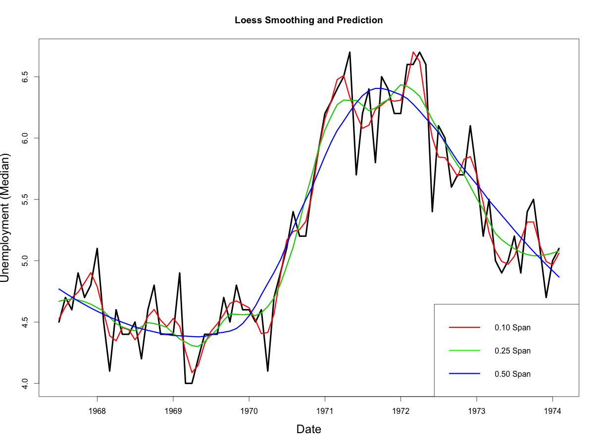

Loess Regression is the most common method used to smoothen a volatile time series. It is a non-parametric methods where least squares regression is performed in localized subsets, which makes it a suitable candidate for smoothing any numerical vector.
Introduction
Loess short for Local Regression is a non-parametric approach that fits multiple regressions in local neighborhood. This can be particularly resourceful, if you know that your X variables are bound within a range.
Loess regression can be applied using the loess() on a numerical vector to smoothen it and to predict the Y locally (i.e, within the trained values of Xs). The size of the neighborhood can be controlled using the span argument, which ranges between 0 to 1. It controls the degree of smoothing. So, the greater the value of span, more smooth is the fitted curve.
The predictor variable can just be indices from 1 to number of observations in the absence of explanatory variables. If other explanatory variables are available, they can be used as well (maximum of 4).
Example
For this example we will try to locally regress and smooth the median duration of unemployment based on the economics dataset from ggplot2 package. We consider only the first 80 rows for this analysis, so it is easier to observe the degree of smoothing in the graphs below.
data(economics, package="ggplot2") # load data
economics$index <- 1:nrow(economics) # create index variable
economics <- economics[1:80, ] # retail 80rows for better graphical understanding
loessMod10 <- loess(uempmed ~ index, data=economics, span=0.10) # 10% smoothing span
loessMod25 <- loess(uempmed ~ index, data=economics, span=0.25) # 25% smoothing span
loessMod50 <- loess(uempmed ~ index, data=economics, span=0.50) # 50% smoothing spanPredict Loess
# get smoothed output
smoothed10 <- predict(loessMod10)
smoothed25 <- predict(loessMod25)
smoothed50 <- predict(loessMod50) 
From above plot, you would notice that as the span increases, the smoothing of the curve also increases.
Code for Plot
# Plot it
plot(economics$uempmed, x=economics$date, type="l", main="Loess Smoothing and Prediction", xlab="Date", ylab="Unemployment (Median)")
lines(smoothed10, x=economics$date, col="red")
lines(smoothed25, x=economics$date, col="green")
lines(smoothed50, x=economics$date, col="blue")Finding the optimal smoothing span
As the smoothing span changes, the accuracy of the fitted curve also changes. If your intent is to minimize the error, the optim() can be used to find that value of span, that minimizes the Sum of Squared Errors (SSE). For this case, it is graphically intuitive that lower SSE will likely be achieved at lower values of span, but for more challenging cases, optimizing span could help.
To implement optim(), we define the function that computes the SSE. An error handling mechanism is needed to address very low values of span and cases where the non-numerics are produced. The simulated annealing method (SANN) is implemented here to find the span that gives minimal SSE. The par argument specifies the first value of the span at which optim() will begin the search.
# define function that returns the SSE
calcSSE <- function(x){
loessMod <- try(loess(uempmed ~ index, data=economics, span=x), silent=T)
res <- try(loessMod$residuals, silent=T)
if(class(res)!="try-error"){
if((sum(res, na.rm=T) > 0)){
sse <- sum(res^2)
}
}else{
sse <- 99999
}
return(sse)
}
# Run optim to find span that gives min SSE, starting at 0.5
optim(par=c(0.5), calcSSE, method="SANN")
#> $par
#> [1] 0.05433545
#>
#> $value
#> [1] 3.85753e-28
#>
#> $counts
#> function gradient
#> 10000 NA
#>
#> $convergence
#> [1] 0
#>
#> $message
#> NULLFor this case, the best value of span turns out to be 0.05433 and the minimum SSE achieved is 3.85e-28.